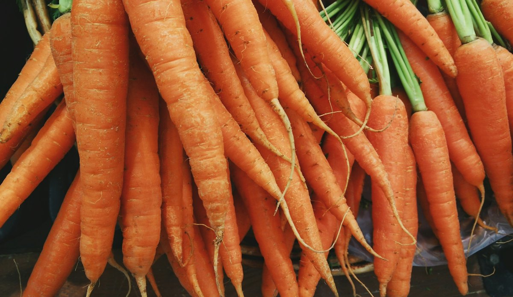

Every year there's one. A carrot that doesn't read the seed packet. This year it was in bed seven, right at the end by the fence, and I should have known something was up when the tops came through looking more like a small tree.
Pulling it
Normally a Humungous comes out with a firm two-handed pull and a bit of a wiggle. This one didn't move. I got the fork in around it and loosened the soil, and still nothing. In the end it took me, Jeff, a spade, a length of rope and the back of the ute.
When it finally came up it was just over a metre long from shoulder to tip and about as thick as my calf at the top. Jeff held it up next to himself for a photo and it came up past his belt.
Jeff put it in the wheelbarrow. The wheelbarrow made a noise I'd never heard a wheelbarrow make.
The wheelbarrow
That barrow had been on the farm longer than I have. It had moved tonnes of manure, compost and carrots without complaint. But the carrot was too long to sit in the tray, so it stuck out over the front, and all the weight ended up on the nose. Halfway down the track the front leg folded, the wheel went sideways and the whole lot tipped into the fence. The fence post snapped clean off at the base.
The carrot was fine. Not a mark on it.

What we did with it
We weighed it on the bathroom scales (holding it, then not holding it, then doing the maths). It came out at just under six kilos. We thought about entering it in a show but the nearest one was months off and a carrot doesn't keep forever.
So it went into the kitchen. That one carrot made:
- Two full carrot cakes
- Eight tubs of soup
- About three litres of juice
- One whole-roasted top half that we ate for Sunday lunch with the neighbours
I've since bought a new wheelbarrow with two wheels at the front. The fence post took most of the afternoon. Jeff reckons the carrot should pay for both. I've told him it already did.
If you want a crack at a Humungous of your own, they're limited each week, so get in early. I can't promise you a metre-long one. I'm not sure I want another.